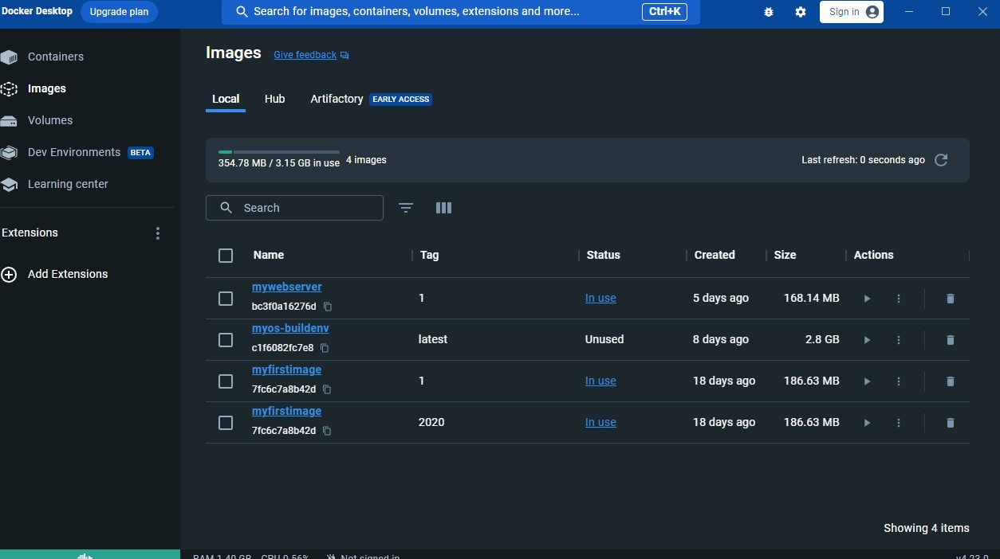

Docker: The Fundamentals
Published on Sept 25, 2023
At long last, I've found the time to delve into the core concepts of Docker in my blog. Docker has become a ubiquitous presence in the software industry. But what exactly is Docker? Docker is, at its core, a container runtime. (Other well-known container runtimes include Podman and CRI-O.) These container runtimes serve as an intermediary layer positioned between the host operating system and individual container instances.
But let's back up a bit. What is a container? A container is a technology that empowers us to isolate specific kernel processes, effectively convincing them that they are the sole inhabitants of an entirely new computer. Containers stand in stark contrast to virtual machines. While a virtual machine requires an entire guest operating system to be installed within the host operating system, a container shares the host OS kernel and merely carries its distinct set of binaries. In simpler terms, there's no need for a completely separate operating system (a guest OS) within your host OS. This key difference eliminates one of the most significant drawbacks of virtual machines. It's worth noting that the computational overhead associated with virtualizing hardware for a guest OS is substantial.
Containers offer another impressive advantage: they can gracefully terminate and re-emerge when load balancing demands it. Whether a container ceases to exist due to a crash or because it's no longer needed during periods of low server traffic, containers are cost-effective to launch, and they are designed to appear and disappear seamlessly.
Installation
For installation, simply refer to the official Docker page: https://docs.docker.com/desktop/install/windows-install/
After installation, you should be able to launch Docker Desktop.
Basic instructions in Dockerfile
Docker can build images automatically by reading the instructions from a Dockerfile. A Dockerfile is a text document that contains all the commands a user could call on the command line to assemble an image. Below describes the commands you can use in a Dockerfile.
| Instruction | Description |
|---|---|
| FROM [IMAGE] | A Dockerfile must start with a FROM instruction, specifying the underlying OS architecture for building the image. You need to choose a base image, such as Ubuntu, CentOS, or a minimal Linux image like Alpine (only 5MB). The goal is to install only the necessary packages, avoiding unnecessary bloat and resulting in smaller Docker images compared to full-fledged OS distributions. |
| COPY [SRC] [DEST] | The COPY instruction duplicates files or directories from SRC and integrates them into the container's file system at the path DEST. |
| ADD [SRC] [DEST] | The ADD command is used to incorporate files or directories into a Docker image. |
| CMD | Sets default parameters that can be overridden through the Docker Command Line Interface (CLI) when the container is running. |
| ENTRYPOINT | Defines default parameters that cannot be altered when Docker containers are executed with CLI parameters. |
| RUN [COMMANDS] | Mainly used to construct images and install applications and packages. It creates a new layer atop an existing image by recording the outcomes of the commands. |
| EXPOSE [PORT] | The EXPOSE instruction opens the specified port for inter-container communication. To illustrate, if you have two containers, a Node.js application, and a Redis server, the Redis container must expose its port. This enables communication between the two containers. For example, the official Redis image's Dockerfile contains the line "EXPOSE 6379," facilitating communication between containers. |
| VOLUME | The VOLUME instruction establishes a mount point with the given name and designates it as a location for externally mounted volumes from the host or other containers. You can specify the value as a JSON array (e.g., VOLUME ["/var/log/"]) or as a plain string with multiple arguments (e.g., VOLUME /var/log or VOLUME /var/log /var/db). Volumes separate the lifespan of stored data from the container that created them. This allows you to remove a Docker container (e.g., "docker rm my_container") without affecting your data. |
Additional Note
- You can use "docker rmi -f IMAGEID" to remove dangling image.
- When crafting a Dockerfile, you have two options for copying files or directories into it: ADD and COPY commands.
- While they share a similar purpose, they do have subtle differences.
- The ADD command, the older of the two, copies files or directories into the container's file system, supporting local and URL sources, even automatically extracting compressed files when sourced locally.
- In contrast, the COPY command was introduced to address some limitations of ADD, offering a more straightforward approach by only duplicating files or directories in their current format, exclusively supporting locally stored content.
- Docker's best practices recommend using COPY over ADD for transparency, especially when copying from the local build context into a container.
- They also suggest avoiding ADD for downloading and copying packages from URLs, recommending the use of wget or curl within a RUN command to save space and minimize image layers.